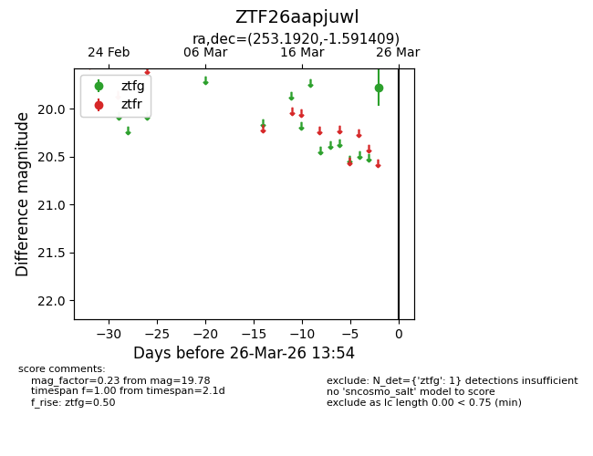
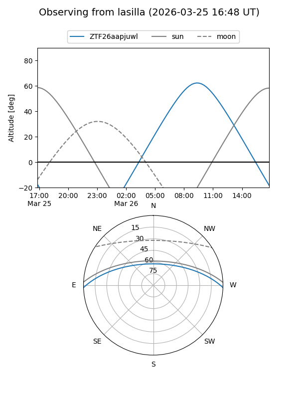
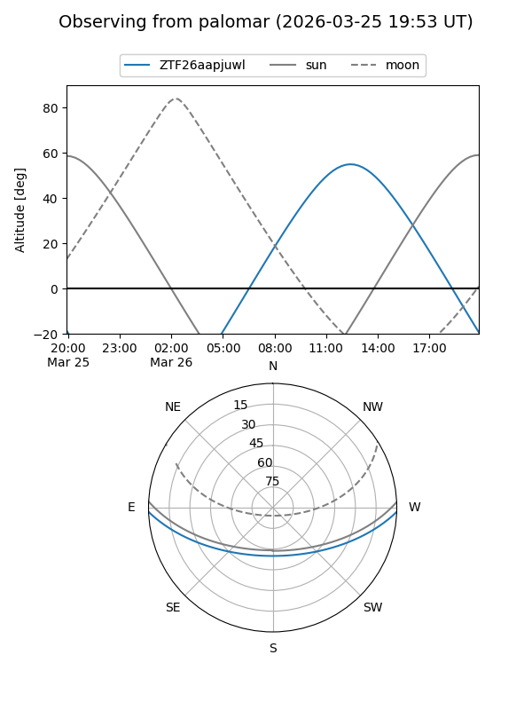

ZTF26aapjuwl
Target ZTF26aapjuwl at 2026-03-26 13:56
Aliases and brokers:
FINK: link
Lasair: link
ALeRCE: link
alt names
ZTF26aapjuwl (ztf,fink_ztf)
Coordinates:
equatorial (ra, dec) = 253.1920,-1.59141
equatorial (HMS+DMS) = 16:52:46.07,-01:35:29.07
galactic (l, b) = (16.8548,+25.32045)
Flags:
Photometry:
last ztfg=19.78
1 ztfg detections
Lightcurve

Visibility


Additional plots